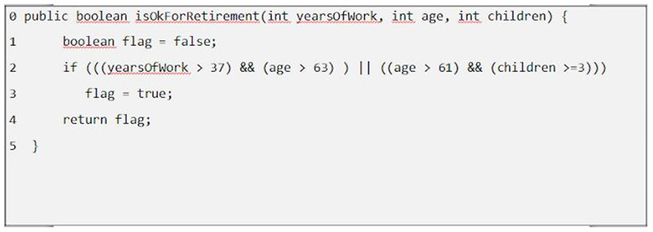
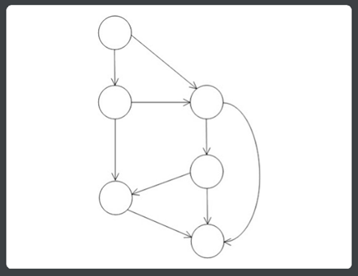
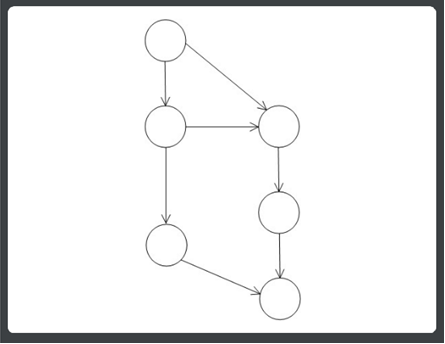
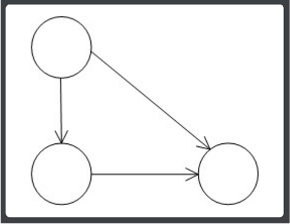
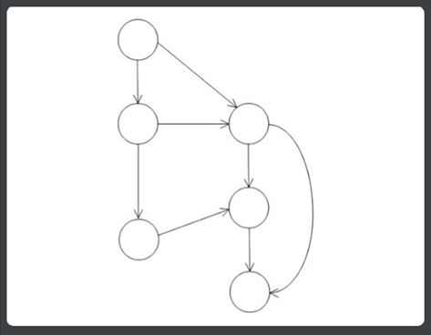
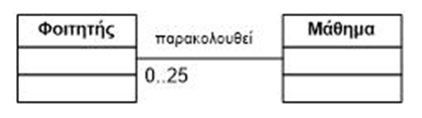

ΤΕΣΤ Τεχνολογία Λογισμικού
ΤΕΧΝΟΛΟΓΙΑ ΛΟΓΙΣΜΙΚΟΥ
3ο ΤΕΣΤ
1. Ποιό από τα ακόλουθα διαγράμματα κλάσεων αποτυπώνει καλύτερα την αρχιτεκτονική σχεδίαση του κώδικα που δίνεται (το σώμα των μεθόδων είναι σκοπίμως κενό - δεν απαιτείται για τη σχεδίαση του διαγράμματος κλάσεων).
(i)
(ii)
(iii)
(iv)
2. Βασικός στόχος στη φάση της σχεδίασης λογισμικού είναι:
Η τεκμηρίωση των απαιτήσεων του χρήστη
Η υλοποίηση του κώδικα
Ο έλεγχος του λογισμικού
Η αποσύνθεση του συστήματος σε μονάδες και ο καθορισμός των σχέσεων μεταξύ τους
3. Ποιό είναι το σφάλμα στο παρακάτω διάγραμμα ακολουθίας ενός υποθετικού συστήματος;
Ο χρήστης δεν μπορεί να εισάγει user name και password σε ένα βήμα (μία ακμή)
Δεν μπορούν να υπάρχουν μηνύματα με κατεύθυνση από δεξιά προς αριστερά όπως αυτό με τη διακεκομμένη γραμμή
Υπάρχει απώλεια της συνέχειας στη ροή του ελέγχου μεταξύ δύο μηνυμάτων
Το μήνυμα 3 δεν μπορεί να ξεκινά και να καταλήγει στην ίδια γραμμή ζωής (γραμμή που εκτείνεται κάτω από κάθε αντικείμενο)
4. Ένας ασφαλής τρόπος για την επιτάχυνση ενός καθυστερημένου έργου λογισμικού (το οποίο αναπτύσσεται βάσει των προδιαγραφών που έχει θέσει κάποιος πελάτης) είναι:
H πρόσληψη επιπλέον προγραμματιστών
Η επιλογή άλλης γλώσσας προγραμματισμού
Η εγκατάλειψη ορισμένων από τις απαιτήσεις του πελάτη που υπάρχουν στο συμβόλαιο
Η παροχή επιπλέον κινήτρων για παραγωγικότητα στα μέλη της ομάδας ανάπτυξης
5. Το πρόβλημα στο διάγραμμα κλάσεων που απεικονίζεται είναι:
Δεν είναι δυνατόν και η κλάση A και η κλάση B να έχουν μία μέθοδο print()
Η πολλαπλότητα δεν έχει νόημα
Δεν επιτρέπεται μία υποκλάση να ορίζει ιδιότητες
Δεν μπορεί να υπάρχει συσχέτιση από μία υποκλάση προς μία υπερκλάση
6. Μια περίπτωση χρήσης (use case) ενός συστήματος λογισμικού αποτυπώνει:
Tον τρόπο με τον οποίο τα αντικείμενα των κλάσεων αλληλεπιδρούν μεταξύ τους
Tους χρήστες ενός συστήματος και τις λειτουργίες στις οποίες αυτοί έχουν πρόσβαση
Tις μη-λειτουργικές απαιτήσεις υπό μορφή ενός σεναρίου αλληλεπίδρασης χρήστη-συστήματος
Eνα διακριτό τμήμα της συνολικής λειτουργικότητας ενός συστήματος που μπορεί να επιφέρει κάποιο αποτέλεσμα που έχει αξία για τον χρήστη
7. Σε ένα διάγραμμα περιπτώσεων χρήσης (use case diagram) ενός συστήματος ηλεκτρονικών αγορών, μια περίπτωση χρήσης "Αποστολή στο Εξωτερικό" εκτελείται στα πλαίσια της περίπτωσης χρήσης "Αγορά Προϊόντος" μόνο όταν ο πελάτης δηλώσει διεύθυνση αποστολής εκτός Ελλάδος. Η ενδεδειγμένη γραφική αναπαράσταση είναι::
(i)
(ii)
(iii)
(iv)
8. Για τον κώδικα που δίνεται στη συνέχεια, ποιός είναι ο αντίστοιχος Γράφος Ροής Ελέγχου (Control Flow Graph);

 
(i)
(ii)
 
(iii)
(iv)
9. Ποιά από τις ακόλουθες φράσεις περιγράφει καλύτερα το παρακάτω διάγραμμα κλάσεων:

Ένας Φοιτητής παρακολουθεί από 0 μέχρι 25 Μαθήματα
Ένας Φοιτητής παρακολουθεί υποχρεωτικά 25 Μαθήματα
Ένας Φοιτητής πρέπει υποχρεωτικά να παρακολουθεί ένα μάθημα
Ένα Μάθημα μπορούν να το παρακολουθούν από 0 μέχρι 25 φοιτητές
10. Οι επισκοπήσεις (inspections) στην ανάπτυξη λογισμικού χρησιμοποιούνται για:
Μέτρηση της απόδοσης των προγραμματιστών
Βελτίωση της ποιότητας
Εντοπισμό 'κακών' προγραμματιστών
Συζήτηση των λαθών
Αποτέλεσμα =